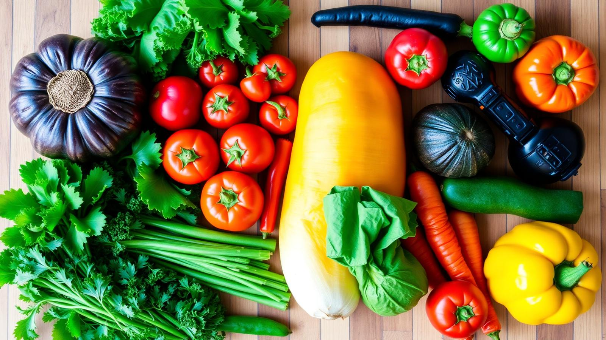
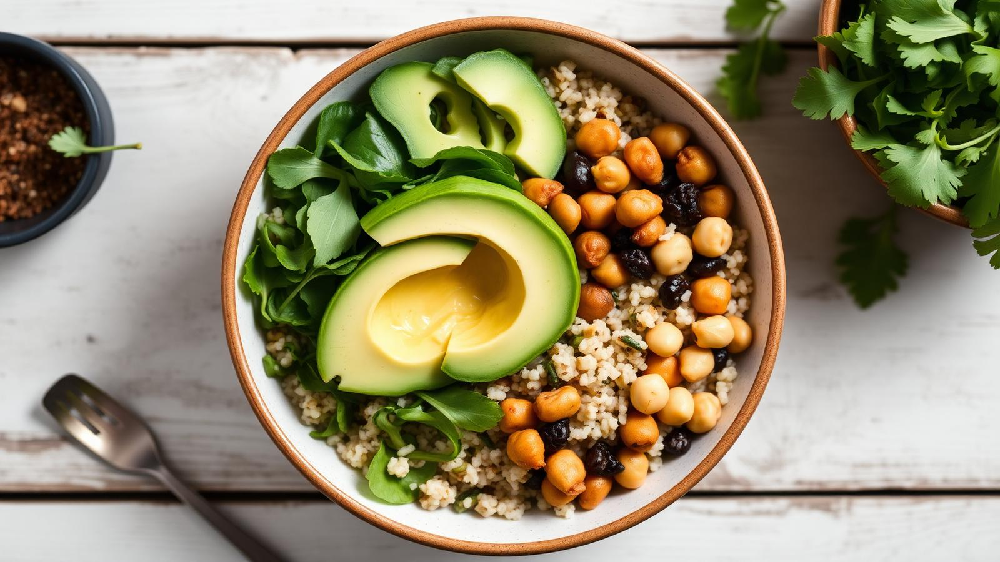
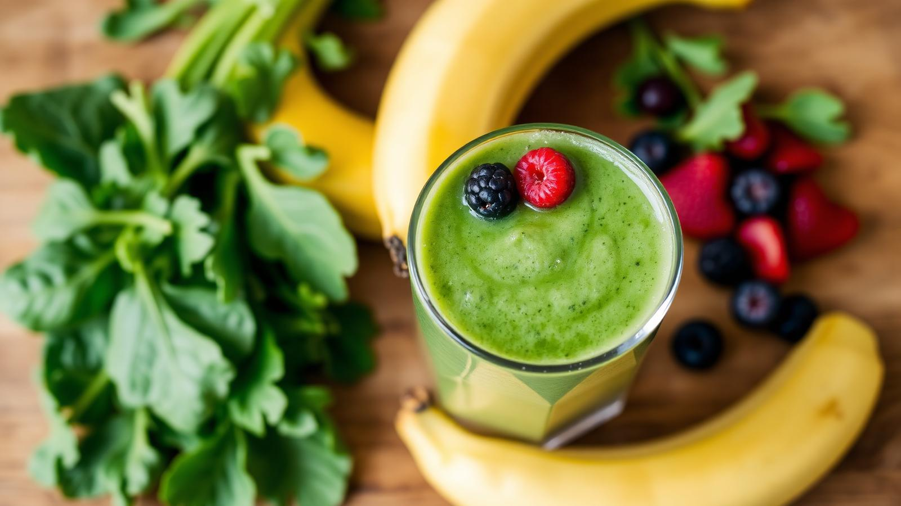

🌱 Provereni saveti
Sve preporuke su zasnovane na naučnim istraživanjima i iskustvu naših nutricionista.
Otkrijte savete, recepte i alate koji će vam pomoći da napravite trajne promene u ishrani — bez dijeta i odricanja.
Pogledaj recepte Zakaži savetovanje


Sve preporuke su zasnovane na naučnim istraživanjima i iskustvu naših nutricionista.
Jela koja možete pripremiti za manje od 30 minuta — bez egzotičnih sastojaka.
Personalizovani planovi ishrane i online konsultacije sa diplomiranim nutricionistima.